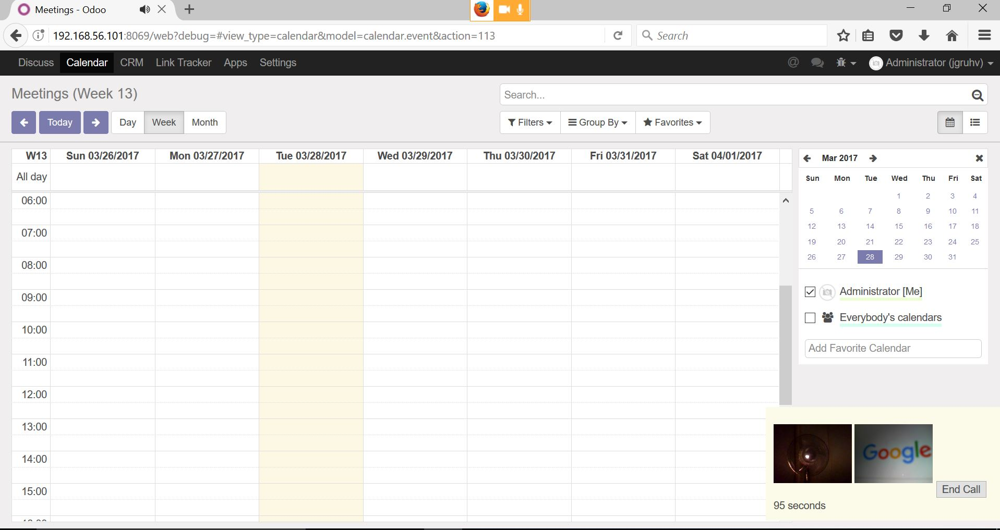

Description
Make video calls with other users
*IMPORTANT* camera access requires https for Google Chrome web browser
Instructions
1. Go to a user and hit the "Make Call" button
2. The other user will receive a notification to answer the call
3. Both users have to accept access to camera/audio
4. Once both users ave accepted media access the call will begin

Custom Ringtones
1. Go to CRM -> VOIP -> Ringtones
2. The first custom ringtone is used
Future features
1. File sharing
2. Instant messaging
3. Screen sharing
4. Automatic transibing of phone calls
5. Inter system communication e.g. other SIP clients
6. Trunking into the PSTN network to send sms/mms and telephone calls
Ringtone courtesy of zedge.net
Find a bug? feature idea? send an email to steven@sythiltech.com.au